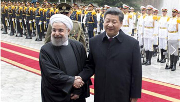

新华网北京1月24日电 国家主席习近平23日结束对伊朗为期两天的国事访问，中东三国之行画上圆满句号。这次访问，习主席与伊朗领导人叙说传统友谊、规划双边关系、对接发展战略，取得了丰实成果。这次访问的亮点都有哪些，新华国际客户端用三组数字，为您解读。
图为1月23日，国家主席习近平同伊朗总统鲁哈尼在德黑兰萨德阿巴德王宫举行会谈。这是会谈前，习近平主席出席鲁哈尼总统举行的隆重欢迎仪式。（新华社记者鞠鹏摄）
这是习主席首次访问伊朗，更是14年来，中国最高领导人第一次来访。 中国和伊朗历史渊源深厚，双边交往可一直追溯到西汉时期。新中国和伊朗建交后，两国历经风云变幻，一直相互理解，相互信任，患难与共。 而习主席此访，则为中伊传统友好注入新的活力。22日晚抵达德黑兰，习主席即在书面讲话中指出，中方愿同伊方一道，乘势而上，不断提高双边关系和务实合作水平，书写中伊关系全面、长期、稳定发展新篇章。